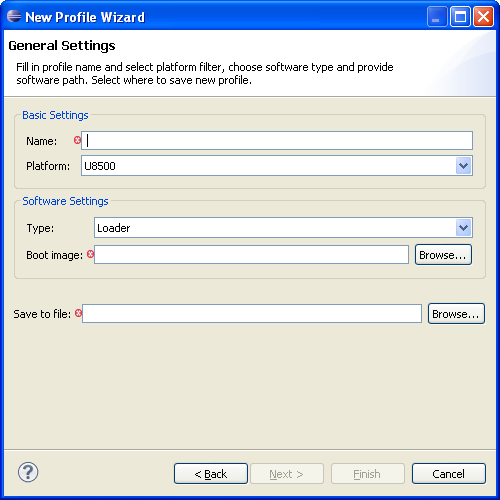
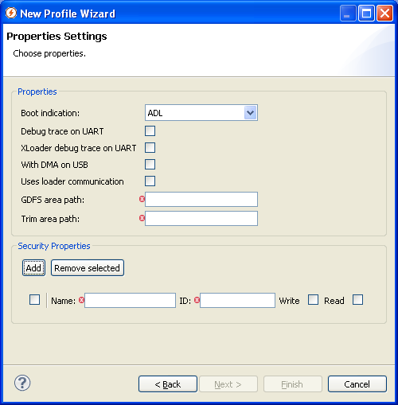

Different MEs may have different configurations, both in terms of hardware and software. A profile is a text file containing the following information for a certain ME configuration:
Open the New Profile Wizard by completing the following steps:
The following wizard will pop-up.
Required Fields:
The second page of New Profile Wizard enables to set different properties which will be stored in profile file. Security and common properties can be specified.
Common properties can be set up on the upper part of this page. Only those checkbox-style properties, which are set to true, will be exported to newly created profile file. All other properties are exported automatically.
The lower part of this page provides UI for creating a list of security properties which can be set on the ME of specified platform (of this platform, for which this profile is being created). It is necessary to define ID and Name of such security property, and possibly also place thick whether this property should be readable and/or writable.
The last page of this wizard shows the content of newly created profile file. This is the last step when it is possible to return to previous pages and repair the entered data. When "Finish" is pressed, the profile file with specified name is created in the defined path.